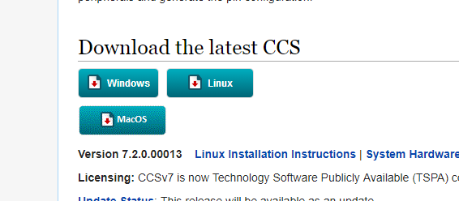
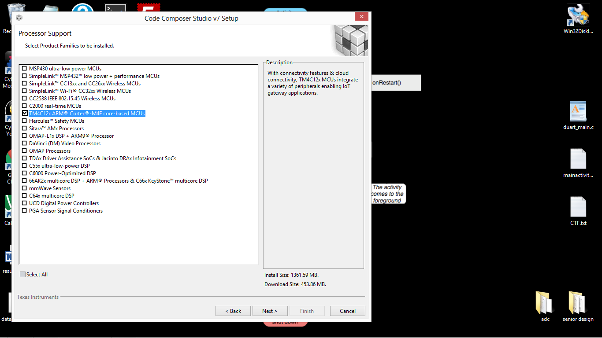

CCS¶
As mentioned before, the backbone of the project is the EK-TM4C1294XL. To bring this device to life we will use code composer studio. The latest version of CCS can be downloaded via the following link. Be sure to use one of the latest versions as pictured below.

http://processors.wiki.ti.com/index.php/Download_CCS
-When selecting processor support, select the box starting with TM4C12x
CCS dependencies¶
For this project we will be using TI’s real time operating system, tivaware C series, and a couple other software packages.
TI-RTOS¶
- first open code composer studio(CCS)
- Select View -> Resource Explorer
- In the right most panel, scroll down to TI-RTOS for Tiva C and click Download and Install
Tivaware¶
- In the left window of the resource explorer, select software and click on the package starting with TM4C Arm Cortex
- In the right window, click Download and Install
- after the installation completes, restart CCS